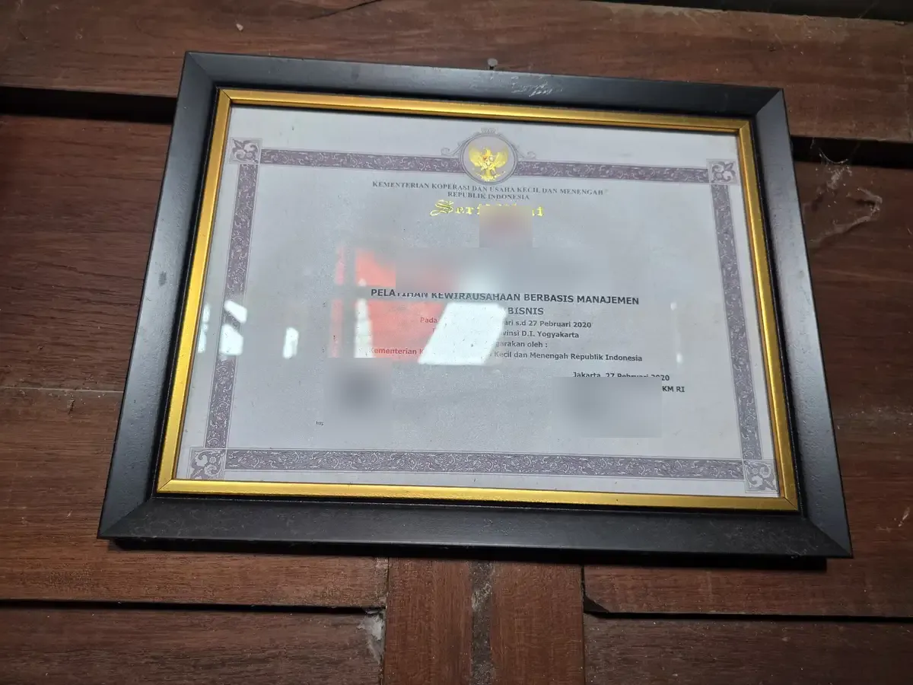
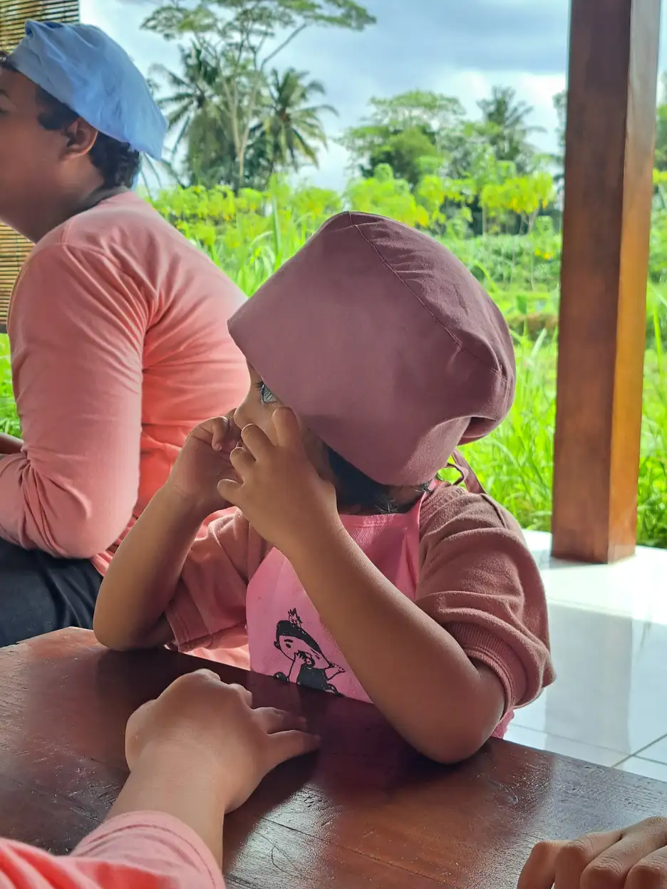
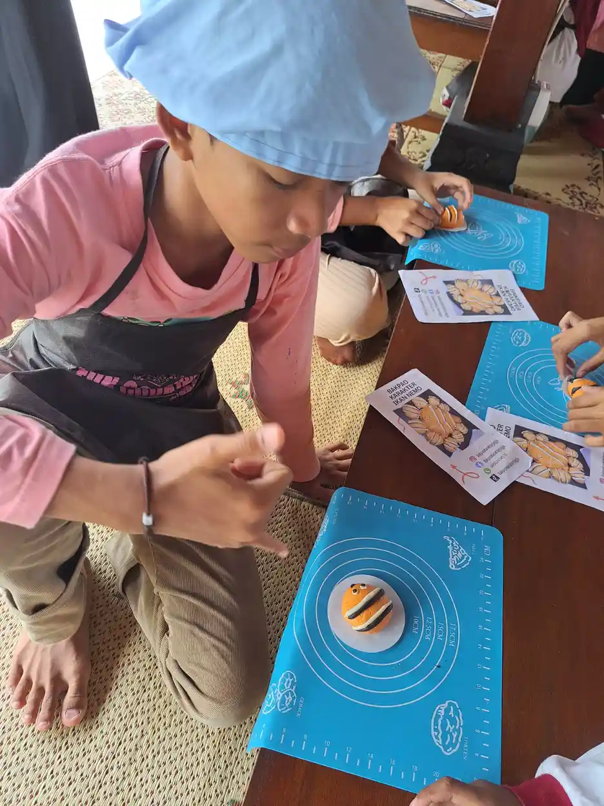

Orang tua sering mencari “lembaga sertifikasi terapis anak di Indonesia”, padahal tidak ada satu label sertifikasi yang otomatis berlaku untuk semua jenis terapi. Jalur verifikasi harus mengikuti profesinya. Periksa pendidikan dan profesi terapis, status registrasi atau izin yang relevan, sertifikat kompetensi bila ada, pengalaman dengan kebutuhan anak, supervisi, serta standar keselamatan layanan.
Daftar Isi
- Mengapa sertifikasi perlu diperiksa?
- Jalur verifikasi yang masuk akal
- Terapis menurut UU Kesehatan
- Memeriksa LSP lewat BNSP
- Lima langkah verifikasi
- Checklist memilih terapis anak
- Biaya dan kesepakatan layanan
- Mengapa asesmen dan tujuan penting?
- Tanda perlu mencari pendapat kedua
- Pertanyaan yang sering diajukan
Mengapa sertifikasi perlu diperiksa?
Terapi anak bukan satu profesi tunggal. Kebutuhan anak dapat berkaitan dengan komunikasi, motorik, perilaku, aktivitas sehari-hari, kesehatan, belajar, atau partisipasi sosial. Setiap area memiliki pendidikan, kewenangan, dan pendekatan yang berbeda. Seorang terapis yang berpengalaman di satu bidang belum tentu berwenang atau kompeten menangani kebutuhan di bidang lain.
Sertifikasi juga bukan pengganti asesmen. Dokumen kompetensi membantu menjawab “siapa yang telah dinilai dan dalam ruang lingkup apa”, sedangkan asesmen membantu menjawab “dukungan apa yang dibutuhkan anak ini”. Keduanya perlu dipisahkan agar orang tua tidak membeli janji yang tidak dapat diverifikasi.
Jalur verifikasi yang masuk akal

1. Kenali profesinya
Tanyakan apakah layanan diberikan oleh terapis okupasi, terapis wicara, fisioterapis, psikolog, dokter, guru pendidikan khusus, atau profesi lain. Minta nama pendidikan dan ruang lingkup layanan. Istilah “terapis anak” saja terlalu umum untuk menjadi dasar keputusan.
2. Cek lembaga penerbit
Jika seseorang menyebut sertifikasi profesi melalui LSP, periksa nama LSP dan status lisensinya di kanal BNSP. Jangan menyimpulkan bahwa setiap kursus atau komunitas adalah lembaga sertifikasi profesi. Untuk profesi kesehatan, tanyakan juga registrasi atau izin yang memang diwajibkan oleh jalur profesinya kepada fasilitas atau dinas kesehatan terkait.
3. Minta dokumen yang dapat diverifikasi
- Nama lengkap dan profesi.
- Institusi pendidikan atau pelatihan utama.
- Nomor sertifikat dan nama penerbit.
- Masa berlaku dan ruang lingkup kompetensi.
- Nama fasilitas tempat layanan diberikan dan penanggung jawab klinis bila ada.
- Prosedur pengaduan, perlindungan anak, dan persetujuan tindakan.
Jangan meminta atau menyebarkan data pribadi yang tidak diperlukan. Untuk anak, fokuskan verifikasi pada kualifikasi dan keamanan layanan, bukan pada memajang dokumen identitas secara publik.
Terapis wicara, okupasi, dan fisioterapis menurut UU Kesehatan
Untuk jenis terapi yang paling sering dicari orang tua anak berkebutuhan khusus, ada rujukan hukum yang jelas. Undang-Undang Nomor 17 Tahun 2023 tentang Kesehatan, Pasal 199 ayat (9), memasukkan fisioterapis, terapis okupasional, terapis wicara, dan akupunktur ke dalam kelompok tenaga keterapian fisik. Ayat (2) pasal yang sama menyebut psikolog klinis sebagai jenis tenaga kesehatan dalam kelompok tenaga psikologi klinis.
Artinya, terapis okupasi, terapis wicara, fisioterapis, dan psikolog klinis berstatus tenaga kesehatan. Status ini membawa kewajiban registrasi dan perizinan praktik. Sebutan populer seperti "terapis anak", "terapis perilaku", atau "terapis sensori" bukan nama profesi yang bisa langsung dicek. Karena itu, tanyakan profesi dasar orang yang memakai sebutan tersebut, lalu periksa dokumen sesuai profesinya.
STR: tanda registrasi tenaga kesehatan
Pasal 260 mewajibkan setiap tenaga medis dan tenaga kesehatan yang akan menjalankan praktik memiliki Surat Tanda Registrasi (STR). STR diterbitkan oleh Konsil atas nama Menteri setelah persyaratan terpenuhi, antara lain ijazah pendidikan di bidang kesehatan dan/atau sertifikat profesi, serta sertifikat kompetensi. Ayat (4) pasal itu menyatakan STR berlaku seumur hidup. Namun Pasal 261 menyebut STR tidak berlaku bila dinonaktifkan atau dicabut.
SIP: izin praktik di tempat tertentu
Pasal 263 mengatur bahwa tenaga kesehatan tertentu wajib memiliki izin praktik dalam bentuk Surat Izin Praktik (SIP). Penjelasan pasal itu menerangkan bahwa yang dimaksud adalah tenaga yang memberikan pelayanan kesehatan secara langsung kepada pasien. SIP diterbitkan pemerintah daerah kabupaten/kota tempat tenaga kesehatan berpraktik.
Pasal 264 menambahkan bahwa SIP mensyaratkan STR dan tempat praktik, berlaku selama lima tahun, dan dapat diperpanjang selama persyaratannya terpenuhi. SIP juga hanya berlaku sepanjang tempat praktik masih sesuai dengan yang tercantum di dalamnya. Jadi, bila terapis pindah tempat praktik, wajar untuk menanyakan apakah izinnya sudah menyesuaikan.
| Profesi | Kelompok menurut UU 17/2023 | Dokumen yang dapat ditanyakan |
|---|---|---|
| Terapis wicara | Tenaga keterapian fisik | STR, SIP, serta ijazah atau sertifikat profesi |
| Terapis okupasional | Tenaga keterapian fisik | STR, SIP, serta ijazah atau sertifikat profesi |
| Fisioterapis | Tenaga keterapian fisik | STR, SIP, serta ijazah atau sertifikat profesi |
| Psikolog klinis | Tenaga psikologi klinis | STR, SIP, serta ijazah atau sertifikat profesi |
| Guru pendidikan khusus atau pendamping | Ranah pendidikan, bukan kelompok tenaga kesehatan dalam pasal ini | Latar pendidikan, pelatihan yang relevan, serta peran dan supervisinya |
Bagi orang tua, implikasinya sederhana. Tanyakan nomor STR dan SIP, nama fasilitas yang tercantum pada SIP, serta masa berlakunya. Bila ragu, konfirmasikan kepada fasilitas kesehatan tempat terapis bekerja atau dinas kesehatan kabupaten/kota setempat. Tenaga kesehatan yang bekerja sesuai aturan umumnya terbiasa menjelaskan hal ini dengan terbuka.
Memeriksa LSP dan sertifikat kompetensi lewat BNSP
Sebagian terapis atau pendamping juga menunjukkan sertifikat kompetensi dari Lembaga Sertifikasi Profesi (LSP). Situs Badan Nasional Sertifikasi Profesi memuat direktori Lembaga Sertifikasi Profesi di situs BNSP. Direktori itu dapat disaring menurut kategori, yaitu LSP pihak kesatu, kedua, dan ketiga, serta menurut lokasi, lengkap dengan informasi lisensinya.
Cocokkan nama LSP pada sertifikat dengan direktori tersebut dan perhatikan status lisensinya. Lalu baca skema atau unit kompetensi yang tertulis. Sertifikat untuk satu skema tidak membuktikan kemampuan di bidang lain. Untuk tenaga kesehatan, sertifikat kompetensi juga tidak menggantikan STR dan SIP. Ketiganya menjawab pertanyaan yang berbeda.

Sertifikat pelatihan atau seminar tetap berguna sebagai tanda bahwa seseorang terus belajar. Yang perlu dihindari adalah menjadikannya bukti tunggal kewenangan menangani anak. Tanyakan siapa penyelenggaranya, berapa lama pelatihannya, apakah ada ujian atau supervisi praktik, dan bagaimana materi itu dipakai dalam layanan.
Lima langkah verifikasi sebelum sesi pertama
- Tanyakan profesi dasar. Pastikan sebutan "terapis" merujuk pada profesi yang jelas, misalnya terapis wicara, terapis okupasional, fisioterapis, atau psikolog klinis.
- Minta nomor STR dan SIP. Catat nama fasilitas pada SIP dan masa berlakunya, lalu cocokkan dengan tempat layanan yang Anda datangi.
- Periksa sertifikat tambahan. Untuk sertifikat kompetensi, cocokkan LSP penerbitnya dengan direktori BNSP. Untuk sertifikat pelatihan, tanyakan penyelenggara dan isi pelatihannya.
- Tanyakan asesmen dan tujuan. Layanan yang baik dimulai dari asesmen, lalu menetapkan tujuan yang terkait aktivitas sehari-hari anak serta cara mengukurnya.
- Sepakati komunikasi dan evaluasi. Tanyakan kapan laporan kemajuan diberikan, siapa yang bisa dihubungi, dan kapan program ditinjau ulang bersama keluarga.
Langkah ini tidak dimaksudkan untuk mencurigai setiap terapis. Tujuannya membantu keluarga membuat keputusan dengan informasi yang dapat diperiksa. Bila Anda masih menimbang jenis terapi yang tepat, artikel terapi wicara dan terapi okupasi menjelaskan fokus masing-masing layanan.
Perbedaan keduanya juga dirangkum di artikel perbedaan terapi okupasi dan terapi wicara. Bila yang dibutuhkan adalah pemeriksaan psikologis, gambaran prosesnya ada di artikel tes psikolog anak.
Bila layanan diberikan di sekolah atau yayasan
Di sekolah inklusi, anak sering didampingi guru kelas, guru pendidikan khusus, atau pendamping. Peran mereka penting untuk belajar dan partisipasi sehari-hari, tetapi berbeda dari terapi oleh tenaga kesehatan. Tanyakan siapa yang menyusun program, apakah ada terapis berlisensi yang terlibat, dan bagaimana sekolah berkoordinasi dengan terapis di luar sekolah.
Checklist memilih terapis anak
| Yang ditanyakan | Jawaban yang membantu | Tanda perlu hati-hati |
|---|---|---|
| Tujuan layanan | Tujuan konkret terkait aktivitas anak dan cara mengukurnya | Janji “sembuh total” tanpa target terukur |
| Asesmen | Ada wawancara, observasi, dan bila perlu alat ukur sesuai profesi | Langsung memberi program tanpa mengenal anak |
| Koordinasi | Bersedia berkomunikasi dengan keluarga dan tim yang relevan | Melarang orang tua bertanya atau meminta pendapat kedua |
| Keselamatan | Menjelaskan risiko, persetujuan, privasi, dan batas intervensi | Menggunakan paksaan atau hukuman sebagai metode utama |
| Bukti kompetensi | Dokumen dan penerbit dapat diverifikasi | Hanya logo, foto sertifikat buram, atau klaim gelar yang tidak jelas |
Biaya dan kesepakatan layanan
Kualifikasi yang jelas sebaiknya diikuti kesepakatan layanan yang juga jelas. Mintalah rincian tarif tertulis per sesi atau per paket, termasuk biaya asesmen awal, laporan, dan konsultasi orang tua. Tanyakan kebijakan pembatalan dan penggantian jadwal. Kejelasan ini mencegah salah paham ketika anak sakit atau jadwal keluarga berubah.
Hindari membayar paket panjang di muka sebelum Anda memahami tujuan dan cara evaluasinya. Tanyakan juga apakah layanan dapat diakses melalui rumah sakit atau fasilitas yang bekerja sama dengan jaminan kesehatan. Gambaran tarif resmi di beberapa rumah sakit pemerintah dapat dibaca di artikel biaya terapi anak berkebutuhan khusus, sedangkan pilihan lokasi di Yogyakarta ada di panduan tempat terapi anak Jogja.
Mengapa asesmen dan tujuan penting?
Intervensi harus dikaitkan dengan partisipasi anak: apakah ia lebih mudah makan, berkomunikasi, bermain, belajar, berpindah tempat, atau mengikuti rutinitas. Kemajuan tidak cukup diukur dari anak terlihat “diam” selama sesi. Orang tua berhak meminta penjelasan tentang tujuan, frekuensi, indikator perubahan, dan kapan program dievaluasi.


Untuk kebutuhan sensorik, AOTA mengingatkan agar intervensi berbasis sensorik tidak diberikan secara serampangan tanpa hasil asesmen yang terdokumentasi. Prinsip ini dapat menjadi pengingat umum: pilih intervensi berdasarkan kebutuhan anak dan tujuan aktivitas, bukan karena sebuah metode sedang populer.
Tanda perlu mencari pendapat kedua
- Anak mengalami luka, ketakutan, atau penurunan fungsi setelah layanan.
- Terapis menjanjikan hasil pasti atau meminta menghentikan semua layanan lain tanpa alasan yang dapat diuji.
- Orang tua tidak boleh melihat rencana, tujuan, atau catatan kemajuan.
- Dokumen kualifikasi tidak dapat diverifikasi atau tidak sesuai dengan klaim layanan.
- Metode melibatkan hukuman, paksaan, penghinaan, atau tindakan yang tidak disetujui keluarga.
Bila ada dugaan kekerasan atau risiko keselamatan, utamakan keselamatan anak dan gunakan kanal pengaduan resmi. Simpan catatan tanggal, nama petugas, jenis tindakan, dan bukti komunikasi.
Pertanyaan yang sering diajukan
Apakah ada satu lembaga nasional yang mensertifikasi semua terapis anak?
Tidak tepat menyebut satu lembaga untuk semua jenis terapi. Jalur pengakuan bergantung pada profesi, jenis layanan, pendidikan, aturan kesehatan atau pendidikan yang berlaku, dan bila relevan LSP yang memiliki lisensi BNSP.
Apa yang perlu ditanyakan sebelum memilih terapis?
Tanyakan profesi dan pendidikan, pengalaman dengan kebutuhan anak, bentuk asesmen, tujuan intervensi, cara mengukur perkembangan, supervisi, biaya, kebijakan keselamatan, serta cara berkoordinasi dengan dokter, psikolog, guru, atau tenaga lain.
Apakah sertifikat kursus sama dengan izin praktik?
Tidak selalu. Sertifikat kursus menunjukkan seseorang mengikuti pelatihan tertentu. Itu tidak otomatis membuktikan lisensi, kewenangan praktik, atau kompetensi untuk semua kebutuhan anak. Minta penjelasan tertulis tentang status sertifikat dan ruang lingkup layanan.
Apa itu STR dan SIP terapis?
STR atau Surat Tanda Registrasi wajib dimiliki tenaga kesehatan yang akan menjalankan praktik dan diterbitkan oleh Konsil atas nama Menteri (Pasal 260 UU 17/2023). SIP atau Surat Izin Praktik adalah izin praktik yang diterbitkan pemerintah daerah kabupaten/kota tempat tenaga kesehatan tertentu berpraktik (Pasal 263).
Apakah STR terapis harus diperpanjang?
Menurut Pasal 260 ayat (4) UU 17/2023, STR berlaku seumur hidup, tetapi dapat tidak berlaku bila dinonaktifkan atau dicabut. Yang memiliki masa berlaku adalah SIP, yaitu lima tahun dan dapat diperpanjang selama persyaratan terpenuhi (Pasal 264).
Bagaimana cara mengecek apakah sebuah LSP memiliki lisensi BNSP?
Buka direktori Lembaga Sertifikasi Profesi di situs BNSP, cari nama LSP yang tertera pada sertifikat, lalu perhatikan informasi lisensinya. Setelah itu baca skema kompetensi pada sertifikat agar Anda tahu kemampuan apa yang sebenarnya diuji.
Apa bedanya terapis dengan guru pendamping?
Terapis wicara, terapis okupasional, dan fisioterapis termasuk tenaga kesehatan menurut UU 17/2023 dan bekerja dengan STR serta izin praktik. Guru pendamping bekerja di ranah pendidikan untuk membantu anak belajar dan berpartisipasi di kelas. Keduanya saling melengkapi bila berkoordinasi, tetapi perannya tidak sama.
Bacaan Terkait
Status tinjauan medis: artikel ini disusun oleh tim pendidik, belum ditinjau oleh dokter berlisensi. Tinjauan oleh tenaga medis berkredensial sedang kami siapkan dan status ini akan diperbarui di halaman ini begitu selesai. Alur tinjauan dan koreksi dijelaskan di Kebijakan Editorial YUKA. Untuk keputusan diagnosis atau terapi, rujuklah pada dokter anak, psikiater anak, psikolog, atau terapis yang menangani anak.
Sumber dan Referensi
- Badan Nasional Sertifikasi Profesi (BNSP)
- Kementerian Kesehatan Republik Indonesia
- UU No. 8 Tahun 2016 tentang Penyandang Disabilitas
- AOTA: Sensory Integration and Processing
- Artikel YUKA: perbedaan terapi okupasi dan terapi wicara
- JDIH BPK: UU Nomor 17 Tahun 2023 tentang Kesehatan (Pasal 199, 260, 261, 263, 264)
- BNSP: direktori Lembaga Sertifikasi Profesi
Catatan: Artikel ini bersifat edukasi umum dan bukan pengganti konsultasi dengan psikolog, tenaga kesehatan, atau petugas layanan sosial resmi. Sumber diperiksa tim YUKA saat artikel disusun.